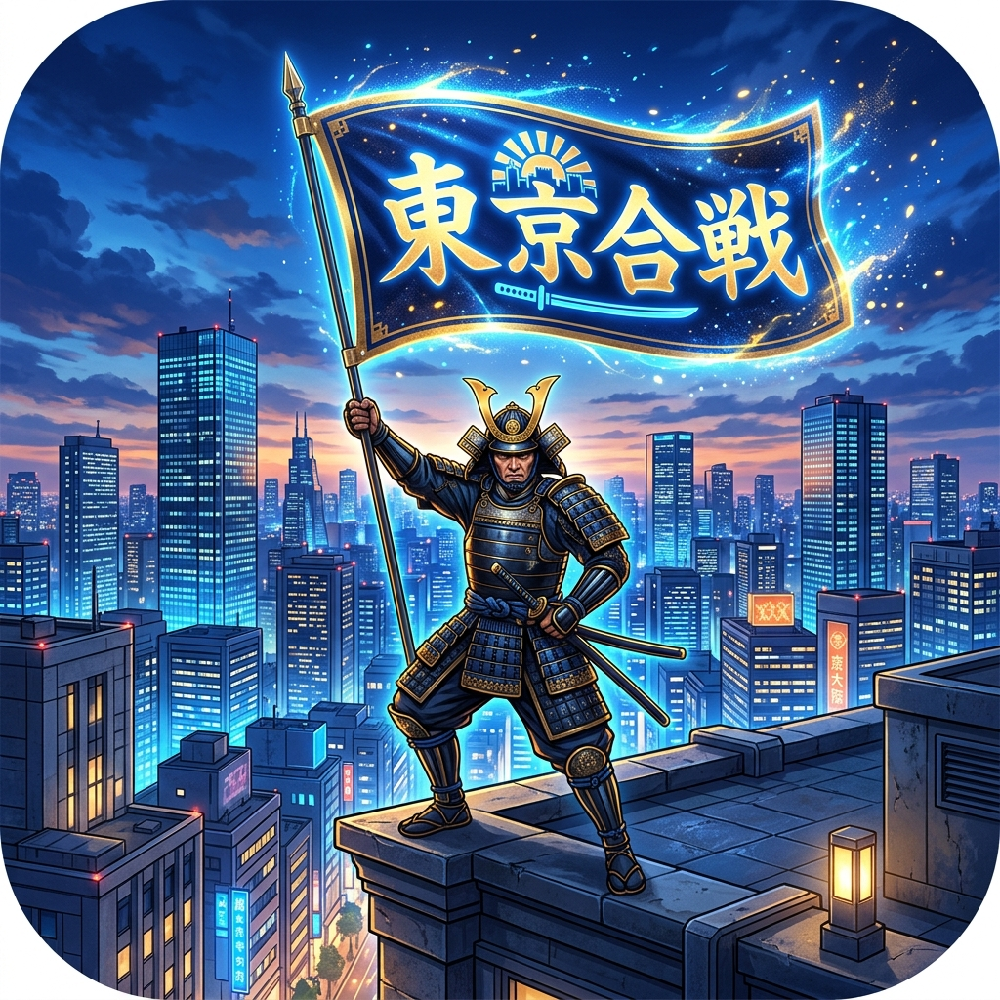

東京都53自治体（全地域 単独スタート）
千代田都庁軍（千代田区）
新宿不夜城軍（新宿区）
港・湾岸コンツェルン（港区）
城北・足立義勇軍（足立区）
武蔵野文教軍（武蔵野市）
八王子山岳衆（八王子市）
地方自治警備隊（各市区町村 独立勢力）

本作は東京都全53市区町村（23区・多摩・西多摩町村）を舞台にした開拓・陣地取りシミュレーションです。 各領地では【商業開発】によって毎月の税収（資金）を高め、【募兵】によって防衛・侵攻兵力を増強できます。 また、各自治体固有の【特産品】を調達することで、隣接勢力への親善贈呈や同盟締結、部隊強化が可能となります。 各月の内政行動は所持軍資金の30%までという規律が課されており、無謀な浪費を抑えながら計画的に領国を発展させる経営手腕が求められます。
合戦は昔のクラシックRPG（初期ファイナルファンタジー風）の3対3コマンドバトルで展開します。 物理近接職は「前列」、術士・電脳砲撃・スナイパー・ヒーラーは「後列」に布陣。 前列の味方が健在である限り、後列への通常物理攻撃は被ダメージが50%軽減されます。 敵の弱点を見極め、前衛で強固に耐えつつ、後衛から強力な全体魔法や支援スキルを繰り出す隊形管理が勝利への鍵です。
自領の特産品を隣接する勢力に差し出すことで、友好度を高めて「不戦・相互防衛協定」を締結できます。 自勢力が強大化して周囲からの警戒が高まった際や、特定の方面に戦力を集中したい時は、外交によって背後の安全を確保することが不可欠です。 相手との友好関係を巧みに操り、孤立を避けながら包囲網を築き上げましょう。
戦いに敗れても直ちにゲームオーバーにはなりません。 10%の賠償金と武将1名の軍役徴発（一時的な貸与）に応じることで自領を守り抜き、留守を預かる「代理副官（能力80%）」と共に地道に国力を再建できます。 虎視眈々と資金と兵力を蓄え、力を整えて再び下克上の狼煙を上げることが可能です。
合戦に出陣する3名の武将を編成します。スロットをクリックしてから下の武将一覧を選択すると入替可能です。
この武将が配下に加わりました！【部隊編成】よりいつでも合戦スタメンに選抜できます！
東京全53自治体（23特別区・多摩・西多摩町村）のどこからでも旗揚げが可能です！お好みの街を選択して東京平定を目指してください。各自治体には固有の名将3名が最初から配下として従軍します。